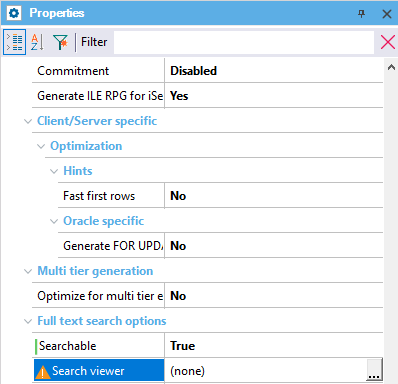

It's a GeneXus object, which has to receive the key of the transaction as a parameter. It's the associated viewer of the transaction when the search result item belongs to this transaction. Description
That is, when calling the viewer of the SearchResultItem transaction, this object will be loaded. By default it's the view of this transaction if Work With Pattern has been applied, or otherwise the Transaction in display mode.  Scope Objects: Transaction See Also
|